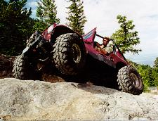
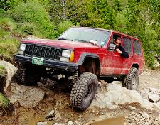
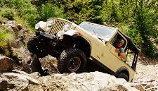

It was fourth of July, what better thing to do than take a ride up Blanca. We camped at the base of Blanca, so we had an early start up the trail. The group included John Jacobson(XJ), Steve Smith(CJ-7), Sean and Stacey Lazelle(EB), and myself and Diane(CJ-2A).
 On the way up we passed a Colorado State Trooper in a full size Bronco with some passengers. When we came around the corner, there was a brand new Dodge Durango rolled hard. It turned out the Dodge rolled from a switch back further up the slope and the trooper was out to make a report.
Soon, we were at the first obstacle, Jaws 1. We all motored right over it and continued up to Jaws 2. Jaws 2 gave us a bit more of a work-out.
 It took me a couple tries at it to work my flat fender over the obstacle. I had to get way high on the rocks on the left to work my short wheelbase jeep over the rocks. Sean had transmission problems. His trans wouldn't hook up over the steep rock pile, but he finally worked over. Steve got high centered and needed a strap. Long wheelbase ruled here, Jon just motored over with his XJ.
We all motored right up Jaws 2.5 and hit Jaws 3. I had to work a couple different lines on Jaws 3 before I got over. Seans trans was acting up again a bit on this obstacle. Steve and Jon just walked it.
After Jaws 3 it started raining, so we paused for a while and built a camp fire and cooked some brats. After filling up on nutritious lunch we continued up to the top. We easily made Jaws 4 and continued to Loon Lake. After hanging out a while, we headed back down the hill.
{kind=link}
{kind=link}